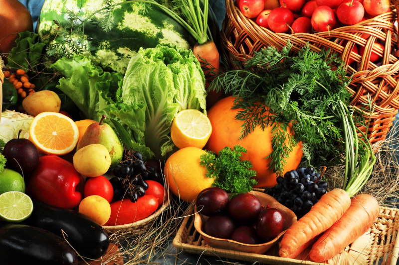
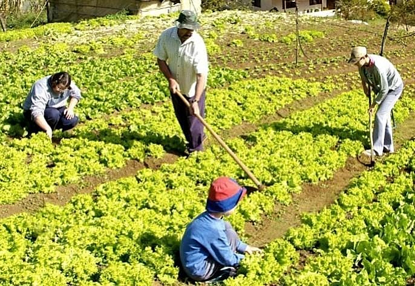

-
Conservação do solo - Recursos naturais

A agricultura sustentável trabalha muito a questão da conservação do solo. Umas das técnicas utilizadas pelas famílias que produz esse tipo de alimento é fazer a rotação de cultura, sempre alternando o plantio de hortaliças, de leguminosas. Geralmente ajuda a evitar a erosão, auxilia na proteção e enriquecimento do solo com nutrientes.
-
Alimentação Saudável
A alimentação sustentável tem a função de promover a saúde e bem estar. Além disso, proporciona um cuidado com o meio ambiente, os alimentos são mais saudável, mais saborosos e tem um valor nutricional maior que os alimentos convencionais.
-
Renda Familiar
A agricultura sustentável tem proporcionado renda as famílias que trabalham com esse tipo de cultura sustentável. Geralmente, a família toda se envolve no plantio, as crianças vivenciam esse tipo de manejo, aprendem a consumir esse alimento e de certa forma, trabalha a concientização da proteção ao meio ambiente.